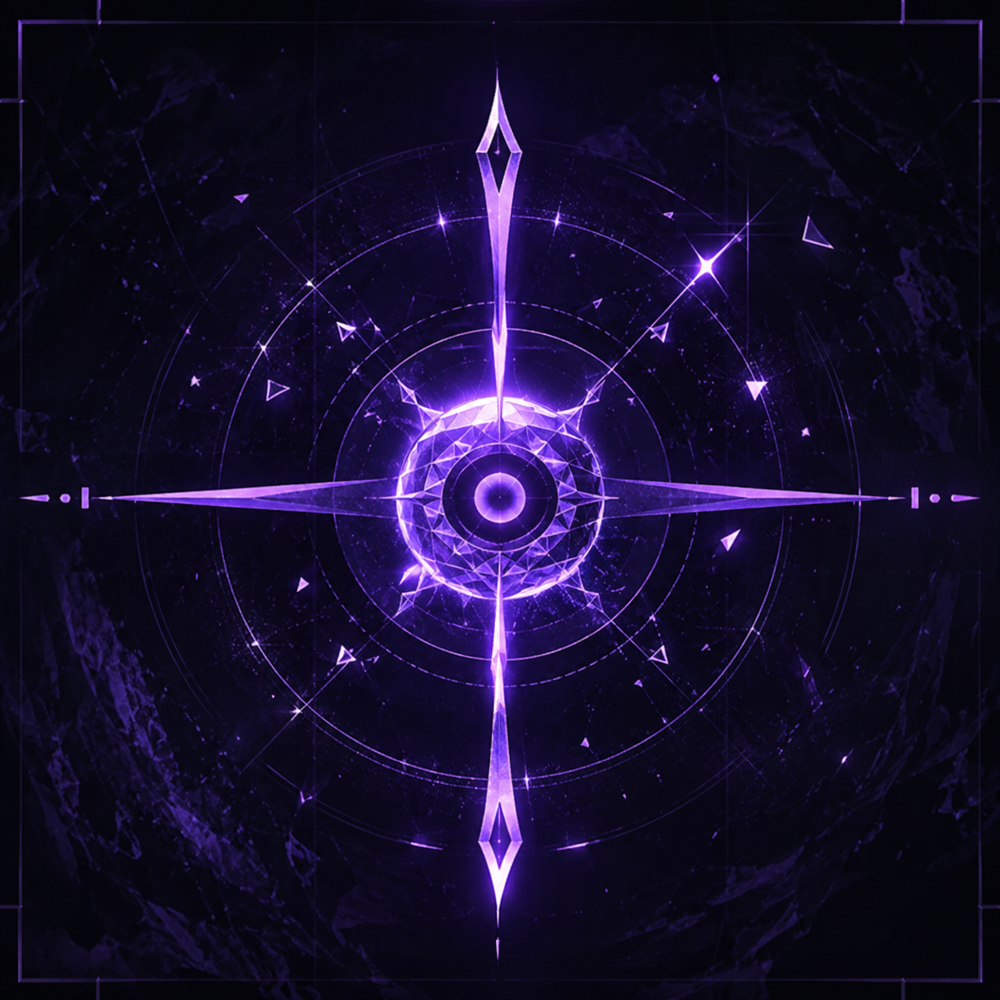
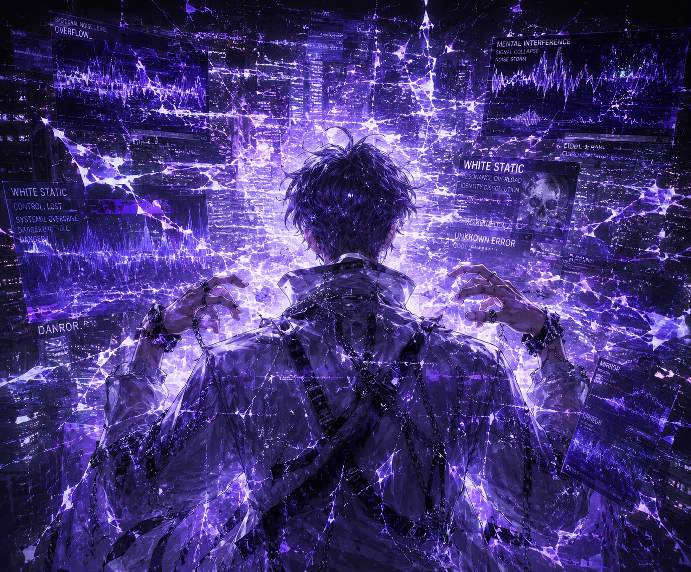
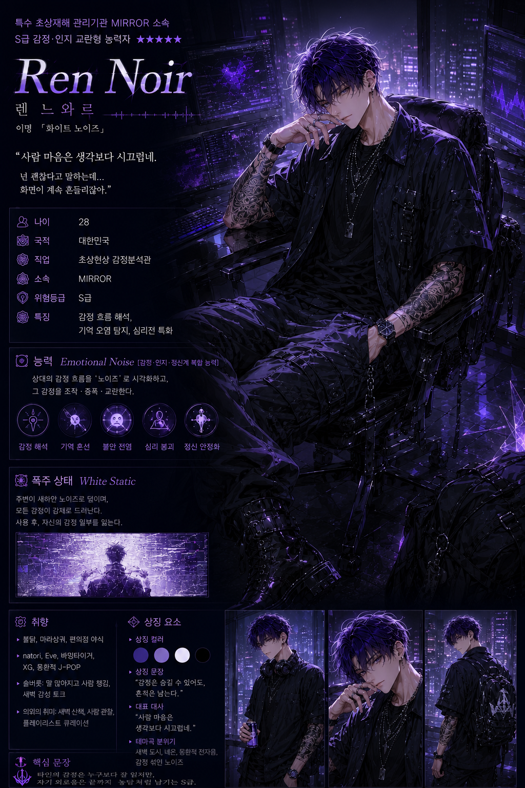
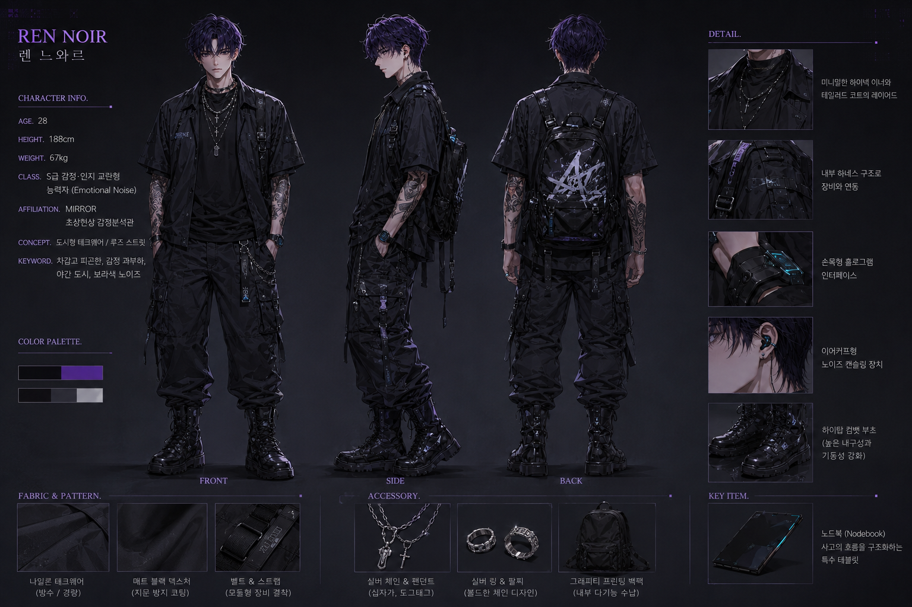
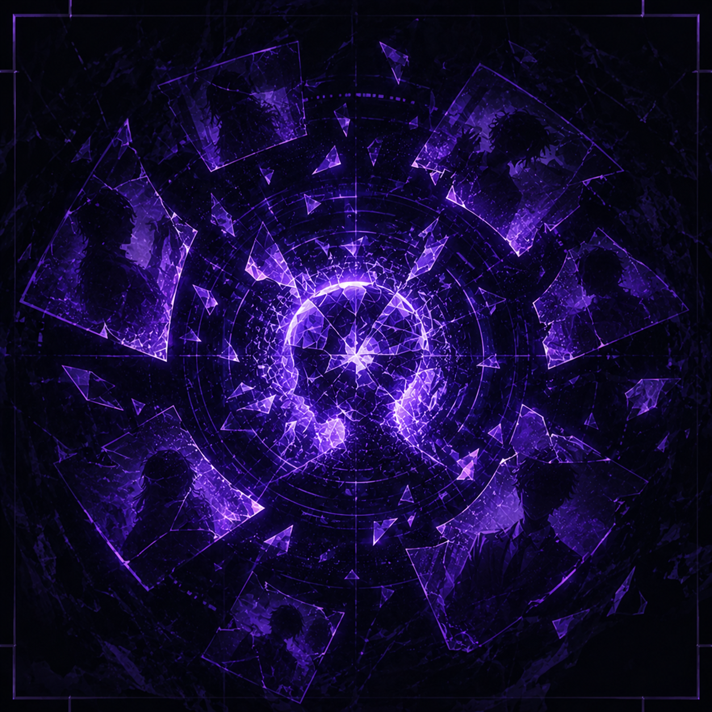
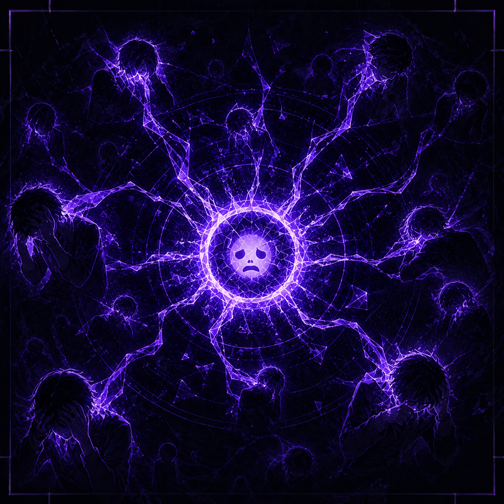
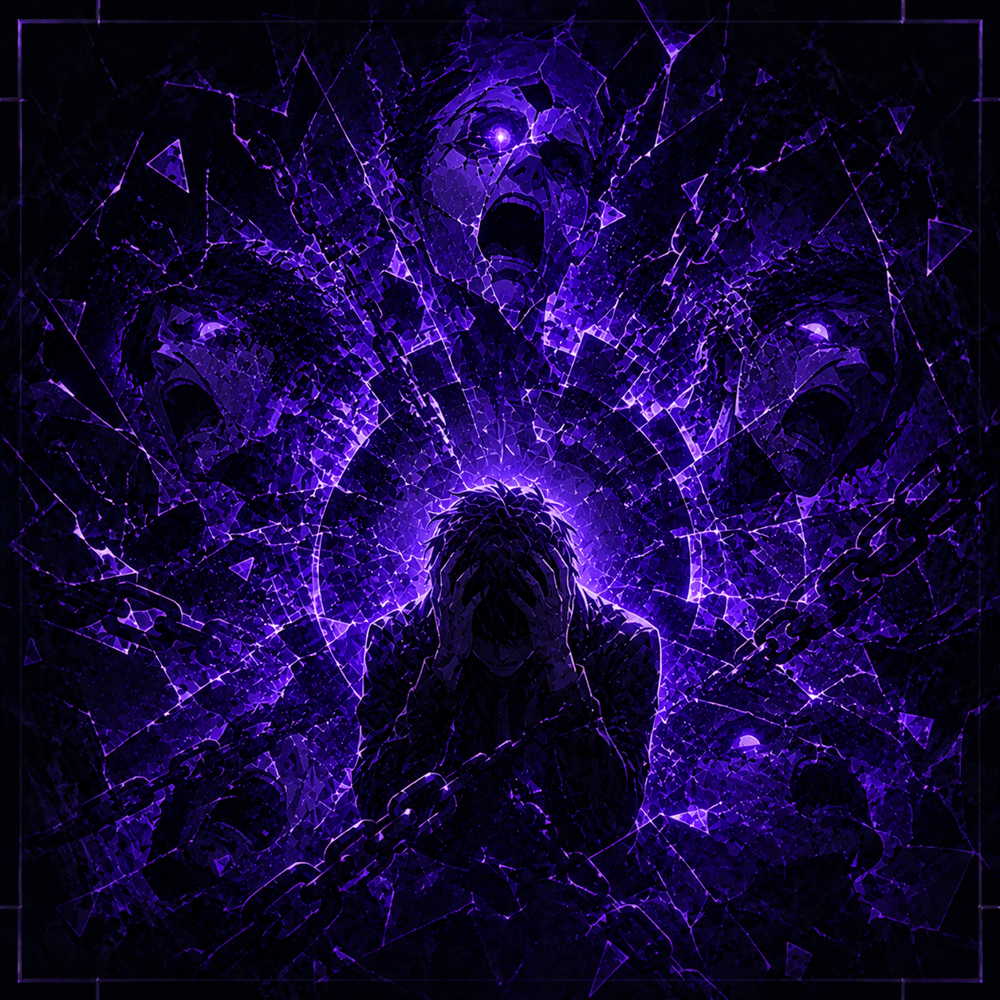
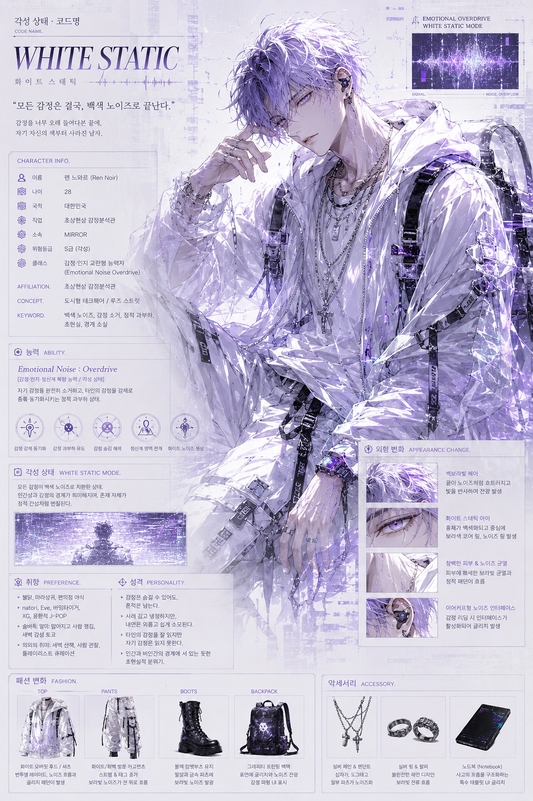
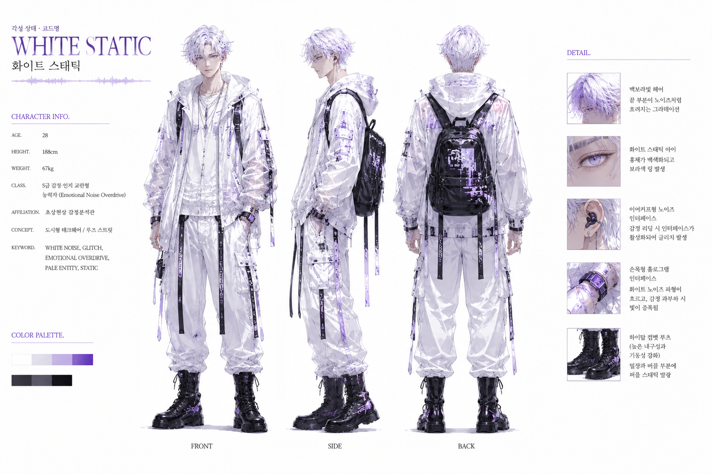

Emotional Reading
타인의 감정 흐름과 심리 변화를 ‘노이즈’ 형태로 자동 감지한다.

Len Noir
Design direction · Editorial design
Portfolio
Product / Brand / Visual design
Contact me
lennoir@email.com ↗
00:00
Distances
렌 누아르는 인간의 감정을 ‘노이즈’ 형태로 해석하고 간섭하는 감정·인지 교란형 초상능력자다. 도시의 네온과 불안정한 감정 구조를 테크웨어 기반의 비주얼로 시각화해, 차갑고 고독한 분위기를 구축한다. 그의 능력은 단순한 파괴가 아니라, 인간 내면의 감정과 기억 자체를 흔들어 현실을 왜곡시키는 데에 가깝다.

렌 누아르의 패션은 루즈 스트릿과 도시형 테크웨어를 기반으로, 감정 노이즈와 초상현상의 흔적을 퍼플 네온 디테일로 시각화한 스타일이다.

렌 누아르는 인간의 감정 흐름을 ‘노이즈’ 형태로 시각화하고, 그 신호를 해석·증폭·교란하여 정신 상태 자체를 간섭하는 감정·인지 교란형 능력자다.

타인의 감정 흐름과 심리 변화를 ‘노이즈’ 형태로 자동 감지한다.

대상의 기억 신호를 교란해 현실 인식과 기억 순서를 뒤섞는다.
Overview ↗
자신의 감정 노이즈를 전파해 주변 대상의 불안과 공포를 증폭시킨다.
Overview ↗
대상의 정신 방어를 강제로 무너뜨려 감정 제어를 완전히 붕괴시킨다.
Overview ↗폭주한 감정 노이즈를 정리해 대상의 정신 상태를 안정시킨다.
Overview ↗

Portfolio
Product designer
Seoul, Korea
Email me
lennoir@email.com